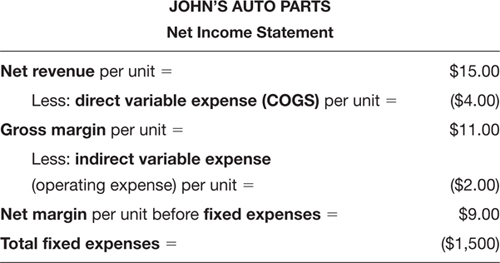
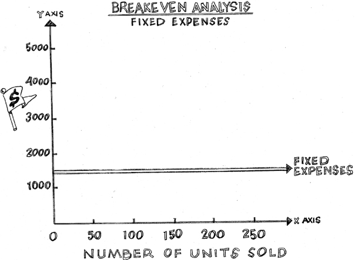
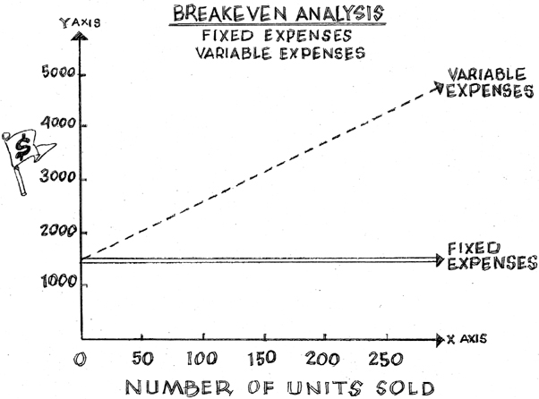
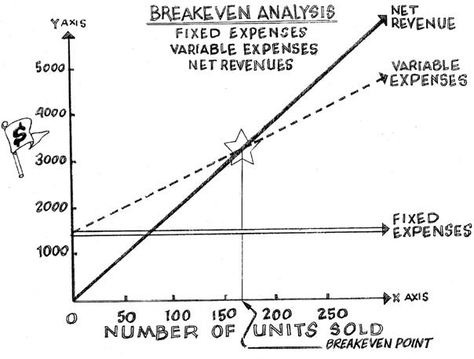
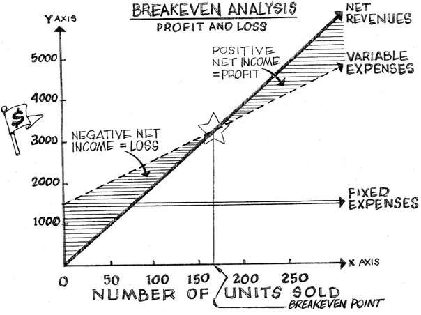

CHAPTER 4
The Breakeven Point
When Your Business Is Truly Self-Sustaining
If someone were to ask you, “How do you know if this business is profitable?” you would now be able to confidently go to the bottom line of the company’s Net Income Statement to see whether it was positive or negative for the period under review. When that line is positive, it means net income is positive and the business is profitable. When that line is negative, it means the business is showing a loss. After three chapters, you are also familiar with all the variables that drive profits as well as with some sophisticated techniques of improving them to build and protect a positive net income. What may have seemed intimidating when you first picked up this book is now becoming intuitive. That’s real progress!
Before I introduce the next gauge on your financial dashboard, the Cash Flow Statement (we get to it in Chapter 5), I thought it was important to introduce you to a key point in the life of a small business that most managers neglect: the breakeven point.
The point at which a business “breaks even” occurs when its net income is neither positive nor negative; rather, it is zero. At the breakeven point, a business’s gains equal its losses. Net revenue is large enough to cover all fixed and variable expenses and the business has the potential to generate sustainable profits. This is why I call the breakeven point the “sleep at night” point. Obviously, we want to see positive net income, but most importantly, we want profits to be sustainable over time.
This chapter will show you how to look at the breakeven point. It will also give you additional ways to ensure that the profit potential of the business is protected in the long term. Every business has a different breakeven point because every business has different levels of expenses and revenue. That’s why it’s important to know what the breakeven point is for the business you’re managing.
The good news is that all the data for determining the breakeven point comes directly from the net income statement. That’s why we’re discussing it here in Chapter 4, right after we’ve discussed the Net Income Statement and how it works in Chapters 2 and 3. This first gauge on your financial dashboard should feel like a comfortable old shoe by now.
But remember, a small business is like your car; it can operate at different speeds. If you want to manage the business toward sustainable profits that are generated efficiently, you need to pay close attention to this breakeven point. When a business reaches this point it means that it, like a growing adult, has become self-sustaining, at least in theory.
WHY THE BREAKEVEN POINT MATTERS
The breakeven point is the first triumph on the road to profitability. Reaching this point of self-sufficiency is a major feat for most small businesses. In the early stages of a small business, all expenses (total fixed and variable expenses) tend to be higher than net revenue.
Why? Because variable expenses, like building a website or promoting the business’s products and services, can be significant and they pile up very fast, while net revenue comes in much more slowly—and unpredictably. It takes time for a business to build a reputation. It takes time for customers to experience the benefits of the business’s unique products or services. It takes time for customers to buy this new product or service so the business can generate sales to grow net revenue. It takes time for customers to fall in love with a product or service and for their enthusiasm to spread to friends and colleagues so they become customers, too. And it takes time to measure the trend of net revenue so managers can begin to predict when new customers will purchase, what products or services they’ll purchase, how much they will purchase, and how much gross margin will be generated from those purchases. These are the factors that drive net revenue and gross margin, which you learned in the last two chapters. (Is it time for another chorus of our mantra from Chapter 2? Every product or service must have a gross margin of at least 30 percent of net revenue or 45 percent above cost of goods sold.)
Building net revenue always takes longer than a small business manager expects. This is why I said in Chapter 2 that it’s vital to keep a tight handle on all expenses in the start-up phase while net revenue is building.
Even if, month after month, the business continues to show negative net income, it’s encouraging to see the rate of net revenue growth increasing. Eventually, as more customers buy, the business should become more efficient in servicing customers and net revenue will begin to grow at a faster rate than expenses. That’s when net income turns positive and profits are being generated. That’s what every business needs to stay viable.
When this dynamic occurs, you know the business is on the road to the breakeven point. If a business never achieves this point, it will never be profitable, no matter how much the world loves its products or services. Until net revenue from sales is consistently higher than the total of both fixed and variable expenses, a business is not self-sustaining.
HOW TO DISCOVER THE BREAKEVEN POINT
Let’s look at an abbreviated example of a simple Net Income Statement for Joe’s Auto Parts. Then I’ll show you how these numbers look on a graph so you can see how to find the breakeven point. In order to figure out how many units must be sold to achieve the breakeven point, I will express net revenue, COGS, gross margin, and variable expenses on a per unit basis instead of showing totals as I did in the previous three chapters.
In this example, net margin is simply net revenue minus both direct variable expenses (COGS) and indirect variable expenses (operating costs) per unit. Or you can think of it as gross margin minus indirect variable expenses per unit (they are two ways of saying the same thing). Either way, this net margin per unit is what’s left over to help cover all fixed expenses. That gets us one step closer to figuring out how many units need to be sold to reach the breakeven point.
We’ll show total fixed expenses and not fixed expenses per unit because this number doesn’t change if we sell one or a thousand units. Let’s look at the first six lines of the Net Income Statement for John’s Auto Parts, as shown in Figure 4–1.
Fixed Expenses Versus Units Sold
If a picture is worth a thousand words, let’s use pictures to see what’s really going on. First, let’s understand what the graph in Figure 4–2 is measuring.

FIGURE 4–1

FIGURE 4-2
Along the bottom, on the horizontal line called the x-axis, you see the label “Number of Units Sold.” As your eye moves to the right, the number of units sold gets larger. The vertical line, or y-axis, simply measures dollars, as the“$” label indicates. Here, these dollars represent fixed expenses, but they can represent anything measured in dollars: fixed and variable expenses, net revenue, or anything else. This comes in handy, as you will see.
I’ve graphed the fixed expense line alone in this figure. It’s a flat, double line that illustrates that whether the business sells one unit or 200 units of anything in this example, fixed expense is the same. For John’s Auto Parts, fixed expense is $1,500. Let’s assume this fixed expense is rent. Until the lease terms change or the business moves, the fixed expense line will not change.
Fixed Expenses and Variable Expenses Versus Units Sold
But fixed expenses are not our only expenses; we need to consider the variable expenses as well. As you might remember from Chapter 2, there are two kinds of variable expenses: direct expenses (COGS—material and labor) and indirect expenses (sales commissions, Web support expenses, marketing expenses, etc.), which increase as the number of units sold increases. Because indirect variable expense increases with greater sales (more units sold), the variable expenses line will slope upward. In Figure 4–3, we added the variable expenses line (the dotted one) to our graph of fixed expenses.
Notice the dotted variable expenses line begins at “0,$1500.” This is because variable expenses are paid over and above fixed expenses.
Fixed Expenses, Variable Expenses, and Net Revenue Versus Units Sold
I mentioned that the y-axis measures dollars, and that anything that is measured in dollars can be graphed on this same quadrant. So we can add the net revenue for John’s Auto Parts to this breakeven analysis and see what happens. We have done exactly that in Figure 4–4.

FIGURE 4-3

FIGURE 4-4
The thick, black, upward-sloping line on Figure 4–4 represents net revenue. This line traces how many dollars will be brought into the company by the sale of one, two, three … 200, 250 units (unit price times the number of units sold, remember?). Notice that the net revenue line starts at the point (0,0), because if John’s doesn’t sell anything, the number of units sold is zero, so net revenue is zero. As John’s Auto Parts sells more units, both the number of units sold and net revenue increases. That is, both lines “head north.” The challenge is to make sure that fixed expenses and variable expenses don’t grow faster than net revenue, so that profit stays positive. That’s the key to reaching the breakeven point as quickly as possible. If your expenses rise faster than your net revenue, the business is in trouble. If not this week or this month, then next month or next quarter.
Customer demand determines net revenue. Customers don’t care if John’s is spending too much or too little on things like rent or marketing. They do care if John’s has the parts they need and if the service is strong or lousy. It’s up to John to keep a tight handle on all the expenses needed to run the business. That’s the key to reaching the breakeven point as quickly as possible. Keeping expenses low while growing net revenue—selling more—is the way to do this. This is not a book about selling more, however; this is a book about making smart business decisions, so I'll stick to that here.
Back to Figure 4–4. Notice the great big star at the heart of the graph. That’s the breakeven point. That’s the place where the number of units sold, and therefore net revenue, is high enough to cover both fixed expenses and variable expenses.
How to Figure Out Breakeven Unit Volume
You know that reaching the breakeven point is important, so wouldn’t it also be helpful to know how many units a business has to sell to get to it? The number of units sold that corresponds to the breakeven point is called the breakeven unit volume (or “breakeven point volume” or “breakeven volume”). It refers to the number of units that must be sold to reach the breakeven point.
Going back to John’s Auto Parts Net Income Statement, we see that the direct variable expenses ($4.00 worth of COGS) have already been paid from the net revenue, leaving him with $11.00, and that his indirect variable costs ($2.00 worth of operating expenses) have been deducted as well, leaving him with $9.00. This means that each unit sold generates $9.00 to cover the remaining expenses, his fixed expenses (the rent). This $9.00 is his net margin per unit (unit price minus direct and indirect unit costs). So let’s figure out how many units John’s needs to sell to cover the rent.
We can solve for the number of units we need to sell to cover this fixed expense of $1,500 per month. This will give us our breakeven unit volume per month. The equation is simple:
Fixed Expenses ÷ Net Margin per Unit
= Breakeven Unit Volume
$1,500 ÷ $9
= 167 units sold to reach breakeven point each month
If you take another look at Figure 4–4, you’ll see a thin line that drops vertically from the breakeven point star to the units sold line. It crosses the Number of Units Sold line at just around 167 units.
Profits Rise Above and Losses Grow Below the Breakeven Point
When I was running Bedazzled, I sweated over every single T-shirt we sold until we sold enough T-shirts to reach that breakeven point. I knew that until we did, Bedazzled would be showing a loss.
In Figure 4–5, you’ll see two shaded areas, one above the breakeven point, the other below it. Look at the shading above the breakeven point star, the one labeled, “Positive Net Income = Profit.” You can see as you trace the net revenue line higher (to the right), the business makes more money.

FIGURE 4-5
As the distance between the net revenue line and the dotted variable expense line gets wider above the breakeven point, the business becomes more profitable. That’s when net revenue is growing faster than all expenses. That’s what every business should strive for.
The Breakeven Unit Volume for Service Businesses
If you manage a service business, these figures apply to you as well. Instead of “Number of Units Sold” on the x-axis of the graph, imagine “Number of Hours Billed” instead. Conceptually, the breakeven point is exactly the same. The key question then becomes, “How many hours does the business need to bill in order to cover fixed and variable expenses?” or, “What is my breakeven unit volume in hours?”
The difference is that in service businesses, you’re selling time and talent. Net revenue may be based on projects completed or hours worked, but at the end of the day it’s important to know what an hour of time is worth, as I discussed in Chapter 3. The numbers of hours worked gets charted just like units sold. The more hours worked, the greater the net revenue should be. At least, that’s how it should work. Know what you want to get paid per hour at each hour of the day based on your uniqueness and your competition’s prices. If what you just read feels you’ve just read a foreign language, please reread Chapter 3.
Revenue Doesn’t Just Grow; Sometimes It Shrinks
You can also trace the net revenue line down and to the left, below the breakeven point in Figure 4–5. The shaded area is labeled “Negative Net Income = Loss.” Below the breakeven point, the dotted line is above the net revenue line. This shows that variable expenses are higher than net revenue. As you continue to trace the net revenue line even lower, there can be a point when both variable and fixed expenses are higher than net revenue. This situation is a real problem that needs addressing! No business is viable long term if it continues to show a loss. That’s why we spent most of Chapter 3 giving you numerous strategies for decreasing various types of expenses and increasing net revenue and gross margin (remember those raspberry cupcakes?) so the business can start earning profit as quickly as possible.
Businesses can see that net revenue line slide back down below the breakeven point for many reasons. The following are reasons I’ve seen over the last 20 years, but trust me, there are many others.
• A decrease in customer demand due to a soft economy decreases units sold and, therefore, net revenue.
• Variable expenses rise, but net revenue doesn’t rise as fast to cover these additional expenses. (For example, the business invests in an expensive online marketing program that costs a lot but delivers few new customers or no increase in net revenue from existing customers.)
• The sales force doesn’t follow up diligently with prospective customers so net revenue potential is not realized while the business continues to pay the expense of the sales force’s salaries and benefits.
• New competition comes into the market with large promotional budgets and steals customers who used to buy from the business you manage.
• New developments in technology make a product or service obsolete, so customers lose interest.
• The business might be too focused on selling old products, which reduces units sold and net revenue.
• The business’s service support is poor, customer satisfaction suffers, and customers start buying from the competition, reducing units sold and net revenue.
IT TAKES TIME TO REACH THE BREAKEVEN POINT
It might seem easy to reach the breakeven point, but, in fact, it is pretty hard to do. Many small businesses never get there, which is one reason why the failure rate of small businesses is so high. Most people who manage small businesses think the problem is that they keep running out of money, but often the truth is that they are running out of time.
Reaching the breakeven point is a race against the clock. The goal is to reach breakeven as fast as possible, so that expenses don’t sink the business before net revenue can catch up. Most small businesses do not reach their breakeven point for three to five years, if they ever do. The longer it takes, the higher the cumulative drag effect all expenses have on generating a positive net income.
You buy time for the business to build net revenue by working to keep all expenses as low as possible for as long as possible, especially in a weak economy. That’s why we spent so much time on ways to reduce expenses and improve gross margin in previous chapters.
Keep Expenses Down to Reach the Breakeven Point More Quickly
By running a business out of a low-rent or no-rent location—someone’s home or garage, for example—until it reaches the breakeven point, you can reduce fixed expenses. This will help the business reach predictable profits a lot faster.
If it’s possible to rent equipment instead of buying it, do that. If it’s possible to hire subcontractors rather than full-time employees, do that too. These tips can help reduce variable expenses. Is it inconvenient? Does it make life just a little more hectic? Yes to both.
In the early years at Microsoft Corporation, everyone—including Bill Gates—flew economy and ate inexpensive lunches to save money. Every opportunity Gates had to save a penny, he did—and look where he ended up! If it’s good enough for Gates, it’s good enough for small businesses to think this way too.
Larry Janesky, CEO of Basement Waterproofing Systems in Seymour, Connecticut, is a genius. He’s also one of my heroes. He started this business when he was 17 years old and built it from nothing to over $100 million in sales with this kind of thinking. Now, he’s taking this message to every contractor who will listen. In his book The Highest Calling (Relia-Serve Corporation, 2009), he admonishes small business managers to hold off buying that shiny new truck until all expenses are covered and net revenue is coming in at a predictable rate. He advises them to resist the temptation to rent larger, swanky office space until net revenue from the business is large enough, profitable enough, and predictable enough to pay for those fixed expense increases. Take it from the success stories; don’t let optimism or your ego goad you into increasing any kind of expense too soon. Save money and you’ll buy time.
Other Strategies to Reach the Breakeven Point More Quickly
The same strategies for raising gross margin and cutting expenses that we discussed in Chapter 3 should be used to race to the breakeven point. And here are a few more:
• Focus on profitable customers who are loyal to the business. Build the relationship with them and find ways to make the business more indispensable to them. This usually improves units sold and therefore increases net revenue.
• Focus sales efforts on products and services having a high gross margin.
• Renegotiate lease agreements, if you can, to drive down fixed expenses. Or simply move to a cheaper part of town.
• Convert full-time staff to part-time staff to save on benefits costs, reducing variable expenses. This may not be an easy option, but trust me, bankruptcy is far more difficult.
Experienced business managers keep a keen eye on that breakeven point and stop at nothing to make sure the business gets there as quickly as possible.
The time it takes to reach the breakeven point is also affected by the economy. In a strong economy, it’s much easier to get there. Employment is strong, and consumers and businesses are buying more products and services because there’s more discretionary income available as the economy expands. In weak economies, it takes longer to reach that breakeven point because unemployment is high and it’s more challenging to find customers who are willing and able to buy products and services. It may cost the same to open a business in a weak economy, but that net revenue line will be flatter and take longer to cross the variable expense line to get to the breakeven point.
MARKETING EXPENSES CAN HELP OR HINDER
Marketing doesn’t come cheap. You’re not mimeographing a flyer on a borrowed machine in the church basement and paying your daughter $2.00 an hour to put them under windshield wipers. Marketing expenses can be a serious drain on the business’s cash (you will learn about this in some detail in Chapter 5). Your goal is to make marketing expenses more efficient as you sell more units. In other words, it should take less marketing expense to find new customers.
Getting a Return on Investment for Marketing Expenses Is Key
Marketing should be viewed as an investment, even though it’s captured as a variable expense on the Net Income Statement. The difference between an investment and an expense is important. When you make an investment in your personal life, you expect to get a return on that investment, a premium over and above the value of your original investment for taking a risk. It’s no different with a business.
If the business spends a dollar on a campaign to promote its website and that campaign delivers $5.00 in new net revenue, the business got a return on its investment. If the business invests in a social media campaign and sees no improvement in traffic to its site or additional net revenue, that campaign becomes a sunk cost—an expense that has yielded no benefit and can never be recovered. If the business builds up a lot of sunk costs, the breakeven point will likely be harder to reach and will have to sell many more units to cover these additional expenses. Faster growth in expenses of any kind without a corresponding increase in net revenue guarantees the likelihood the business will slip below the breakeven point and show a loss.
Many small business managers fall into the trap of hiring online marketers and end up with very little return for this variable expense. (I felt the sting of this when I was launching Best Small Biz Help.com.) If the business hires professional marketers to promote products or services online or offline, make sure that expense is quickly providing a return on investment for the business. To do this, you must be clear on the measures of success.
Establish Benchmarks for Performance to Get a Return on Marketing Expenses
When you invest in a marketing campaign, you should know how to measure what improved as a result. What are reasonable expectations for number of new prospects attracted to the business, or number of new visitors signed up for the newsletter? In what period of time should this take place? These and other metrics should be discussed with your marketing professional before you sign a contract. If your resource doesn’t want to discuss these measurements of success with you, that should raise a red flag. Move on and find a marketer who is willing to be accountable.
Be sure to compare those measures before and after the marketing campaign. You should see the needle start moving on those measures of success within two weeks of a campaign. If the campaign is working, invest more into it. If it isn’t working after 60 days, reduce this variable expense or eliminate it altogether. This is one way to keep marketing expenses from getting out of control. Here are some questions I ask to measure whether or not the cost of a marketing campaign was worth the expense:
• What improved after the marketing efforts began?
• Did the number of relevant visitors to the website increase?
• Did these visitors engage for a longer period of time than before these marketing efforts began?
• Was the business more efficient at finding new, qualified prospective customers?
• Did the quality of new customers improve?
• Did the campaign help build stronger, more credible relationships with existing customers?
• Did the business close more net revenue with higher average gross margin?
• Did the average net revenue from each sale increase (meaning existing customers are buying more)?
• Were there more repeat purchases as a result of the campaign?
Focus Marketing Efforts on High Gross Margin Products and Services
Along with controlling costs, you’ll reach the breakeven point faster by focusing sales efforts on high gross margin products and services because they’ll work harder to cover all expenses. If product A generates $5 in gross margin per unit and product B generates $10 in gross margin per unit, what product should the marketing efforts focus on? If you said Product B, that’s the right answer and Chapter 2 really did make a difference in your thinking! Each sale of Product B throws off $10.00—twice the gross margin of Product A. Thus, the more of Product B that is sold, the faster the business reaches the breakeven point. Think of this another way; the more Product B is sold at a higher gross margin per unit, the fewer units have to be sold to reach the breakeven point.
This is why I believe you run a business on gross margin. You run it on net revenue that generates at least a 30 percent gross margin. Your Net Income Statement measures this, and now you know how to read it, where to look for it, and what to do if gross margin falls below 30 percent. This is no small triumph.
Implementing some or all of these suggestions won’t necessarily be easy. But when the survival of the business is at stake, no product or expense can be sacred if it isn’t contributing adequately to gross margin to help the business reach the breakeven point and beyond.
STAYING AT OR ABOVE YOUR BREAKEVEN POINT
Healthcare professionals ask, “Do you know your number?”—meaning your blood pressure. In business, the reference point that answers that question is the breakeven unit volume required to cover all the expenses to keep your business humming. This marks the spot where your business achieves a balance between net revenue coming in from customer purchases and expenses (including your hopefully handsome salary) going out to run the business.
Knowing your breakeven point helps you to appreciate the significance of your spending decisions. Knowing your breakeven unit volume, you’ll ask, “If the business takes on one more dollar of expense, of either fixed or variable expense, how many more units of product or hours of services does it have to sell to cover those additional expenses?” You may decide not to take on any additional expense once you figure out how much harder you have to work to bring in new customer net revenue to cover it. When thinking about maintaining your health, the best strategy is to work on prevention. It’s the same thing when you’re running a small business—preventing falling net revenue, rather than trying to recover from it, is the best strategy.
High gross margin will always make it easier to cover expenses of any kind, which is why it is such an important part of your strategy to prevent falling below the breakeven point.
Another key prevention measure, discussed in Chapter 3, is protecting and stabilizing your net revenue by diversifying your customer base. If over 15 percent of net revenue is generated by one important customer and that customer decides to stop buying, losing that net revenue could plunge your business well below the breakeven point.
* * *
The breakeven point is like the big red arrow on a map at the mall. It shows you where the net revenues are relative to all expenses. The first place to go to figure out the breakeven point for a business is the Net Income Statement. It provides all the information you need to determine if your business is below, at, or above the breakeven point. If the Net Income Statement is showing a loss, a review of the breakeven unit volume will reveal how many more units need to be sold or how much expenses have to be cut to move profits into positive net income territory.
KEY TAKEAWAYS
 The breakeven point is the point at which net revenue from units sold is high enough to cover all fixed and variable expenses (that is, all expenses including COGS) and profits are zero.
The breakeven point is the point at which net revenue from units sold is high enough to cover all fixed and variable expenses (that is, all expenses including COGS) and profits are zero.
 New and growing businesses must grow net revenue above the breakeven point to be viable.
New and growing businesses must grow net revenue above the breakeven point to be viable.
 Existing businesses must prevent net revenue from falling below the breakeven point to maintain financial viability.
Existing businesses must prevent net revenue from falling below the breakeven point to maintain financial viability.
 Lowering all expenses and improving gross margin will always make it easier to reach the breakeven point.
Lowering all expenses and improving gross margin will always make it easier to reach the breakeven point.
 The lower your expenses and the higher your gross margin is, the faster your business will reach and exceed the breakeven point.
The lower your expenses and the higher your gross margin is, the faster your business will reach and exceed the breakeven point.
 Breakeven unit volume is the number of units sold the business needs to achieve to reach the breakeven point. The larger the gross margin per unit, the fewer units you need to sell to cover all expenses and reach beyond the breakeven point to profitability.
Breakeven unit volume is the number of units sold the business needs to achieve to reach the breakeven point. The larger the gross margin per unit, the fewer units you need to sell to cover all expenses and reach beyond the breakeven point to profitability.
 Expenses must always grow at a slower rate than net revenue.
Expenses must always grow at a slower rate than net revenue.
 Make sure profitable net revenue is coming in predictably before you increase any type of expense.
Make sure profitable net revenue is coming in predictably before you increase any type of expense.